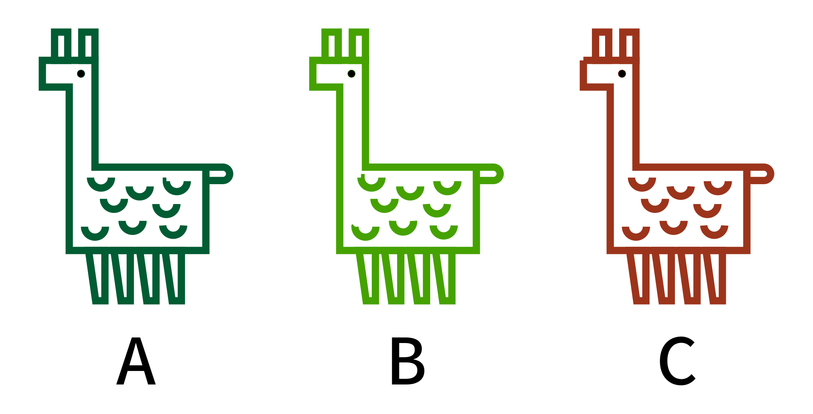
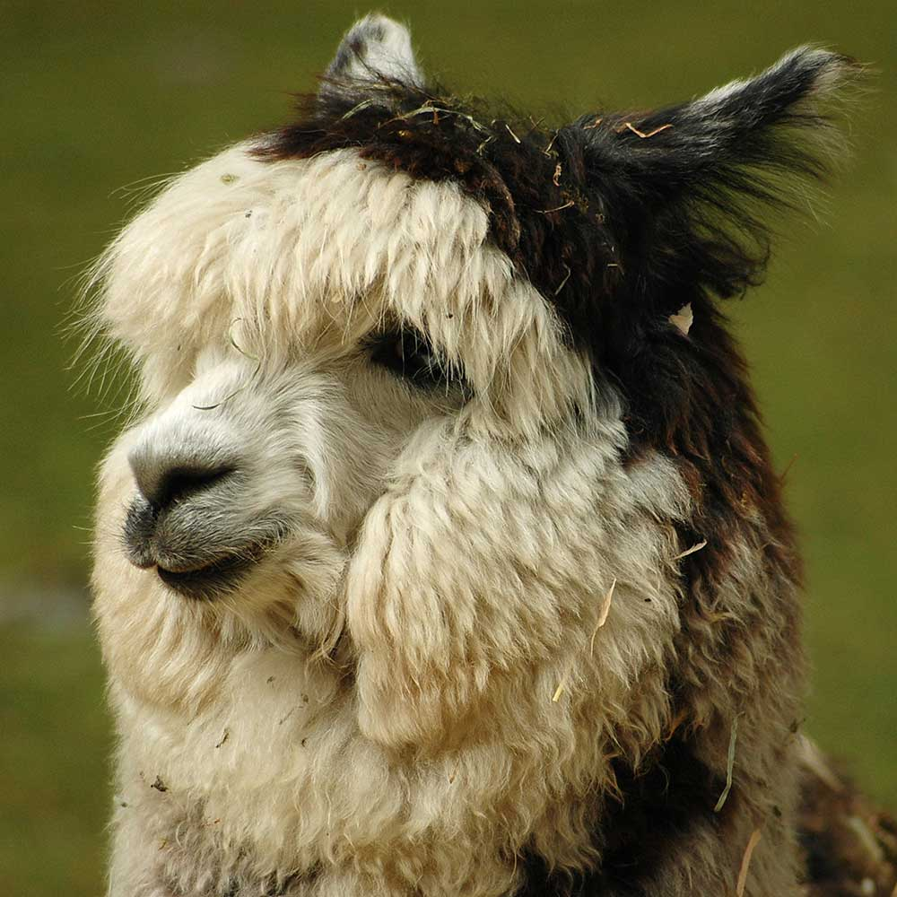

<div id="question-1" hidden>

</div>

<div id="question-2" hidden>
  
  
  
  
</div>

<div id="question-3" hidden>
  <div class="macular-degeneration"></div>
</div>

<div id="question-4" hidden>
</div>

<div id="question-5" hidden>
  
</div>

<div id="question-6" hidden>
  <div class="embed embed-16by9 push">
    <video class="embed-item" muted controls loop autoload="metadata">
      <source src="media/alpaca.mp4" type="video/mp4">
      <track src="media/alpaca.vtt" kind="captions" srclang="en" label="English">
    </video>
  </div>
</div>

<div id="question-7" hidden>
  

  <svg width="1" height="1" viewBox="0 0 1 1">
    <defs>
      <filter id="color-blindness">
        <feColorMatrix type="matrix" values="0.625 0.375 0 0 0  0.7 0.3 0 0 0  0 0.3 0.7 0 0  0 0 0 1 0"/>
      </filter>
    </defs>
  </svg>
</div>

<div id="question-8" hidden>

</div>

<div id="question-9" hidden>
  
  <div id="pointer-lock-overlay">
    <button id="pointer-lock-engage" class="btn giga">Start next question</button>
  </div>
</div>

<div id="question-10" hidden>
  
  <div class="blindness"></div>
</div>
